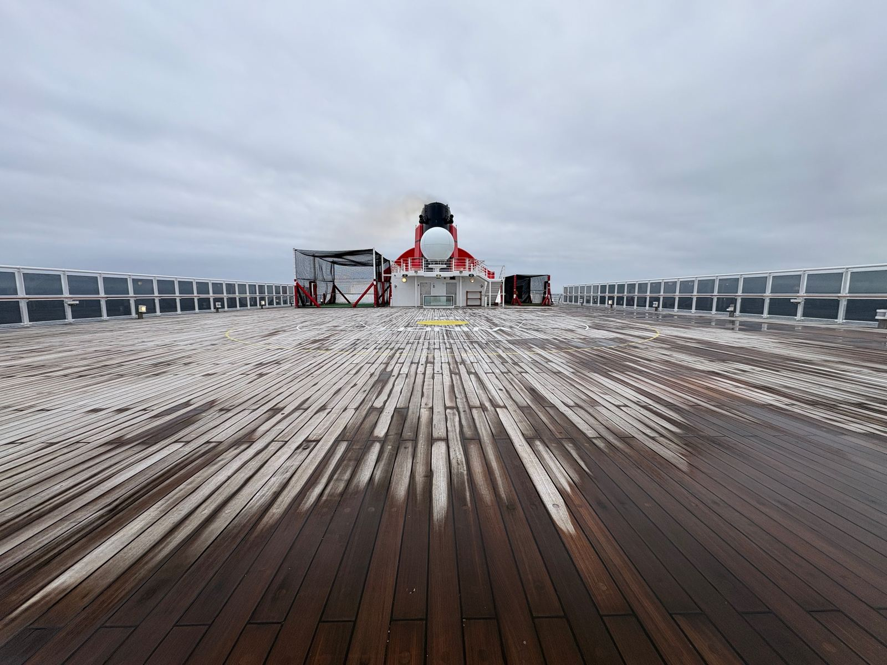

Cruise basics
First-Time Cruise Tips: What I'd Tell a Friend Before They Book

A first cruise can look like a holiday with the hard parts already solved: your room travels with you, dinner is down the hall, and there's a new port in the morning. Mostly, that's true. But the ship, the cabin, the dates and the port schedule all shape the trip, and the fare at the top of the page may not cover what you think it does.
Here's what I'd tell a friend before they booked.
1. Choose the sailing before the ship
Start with what you want the days to feel like. A quiet run of sea days? A new port most mornings? Long days ashore, or a ship with plenty going on? A seven-night itinerary with five ports and a crossing with seven sea days are completely different holidays.
Then read the itinerary closely, not just the list of places. How long is the ship in port? Does it arrive early or leave mid-afternoon? Does it anchor offshore and use tenders? A short call can turn a city you were excited about into a quick look.
If you want specific dates, a suite, connecting cabins or a popular seasonal route, start looking six to twelve months ahead. A sale isn't much of a bargain if it puts you on a ship or route that doesn't suit you.
2. Pick a cabin for how you'll use it
There's no best cabin, just the one that fits your budget, your stomach and how you like to spend your time.
- Inside: the most economical, and fine on a port-heavy trip if you'll mostly be ashore.
- Ocean view: daylight, though the window usually doesn't open.
- Balcony: your own bit of outdoors. Lovely for scenery and slow mornings, not automatically worth it on every itinerary.
- Suite: more space, and sometimes extra perks. Check exactly what's included.
Light sleeper? Check the deck plan for what's above, below and beside you: theaters, pools, bars, the galley.
3. Fly in the day before
If you're flying to the port, arrive the day before the ship sails. A delayed flight or a long wait for bags can turn embarkation day into an expensive sprint, and the ship won't wait. The night before also gets you a proper sleep, a relaxed dinner and an easy morning.
If you're sailing from Southern California, check your terminal. The Port of Los Angeles and the Port of Long Beach are two different places.
Going home, give yourself room. Getting off a big ship and collecting your bags takes the morning, so an afternoon flight is far easier than one that assumes everything goes perfectly.
Do the online check-in ahead of time, and arrive at the terminal when the line tells you to. The sailing time isn't your boarding time. Keep passports, medication, valuables, chargers and a change of clothes in your carry-on, since checked bags can take a while to reach your cabin.
4. Add up the real cost
What's included varies a lot by line and fare. Drinks, Wi-Fi, specialty restaurants, shore excursions and gratuities may be extra. Flights, a hotel the night before, transfers and insurance usually sit outside the cruise fare entirely.
Before you book, make a short list of the extras you'll actually want. A glass of wine with dinner isn't the same as a drinks package every day. If you're happy reading offline, you may not need Wi-Fi. And you don't need a paid excursion in every port. The point isn't to price the fun out of the trip, just to know what you're choosing before the onboard account starts adding up.
5. Plan excursions, but don't fill every port
Book the things you'd genuinely be sorry to miss, a few months out, since popular tours fill up. Leave the rest open: a walk, a long lunch, a museum, or a quiet day on board while most people are ashore.
The cruise line's excursions can cost more than going independently, but they make the logistics simple. If you go on your own, know how far you are from the ship and what time all-aboard is. All-aboard time isn't a suggestion.
6. If you're worried about rough seas
You don't need to expect the worst. A cabin low down and toward the middle of the ship moves the least, so if motion is on your mind, start there. Fresh air and a look at the horizon help a lot of people. Bigger ships and calmer seasons help too, and I'm happy to talk through which routes tend to be smoother. If you think you might want something for it, sort that out before you go, not on the first rough afternoon.
7. Let the first day be a first day
Embarkation day is busy. Your cabin may not be ready right away, the ship is new to you, and everyone is looking for lunch at the same time. Board in your window, keep your essentials with you, do the safety briefing, and wander a bit. Book any dinners or shows you care about, then let the rest wait. A good first afternoon is one where you're on board, fed, and know where your passport is.
Accessibility on board
Cabins
Accessible cabins vary from ship to ship, and they're limited, so book early. Ask about the specific cabin, not just the category: the shower, the doorways, the space around the bed. I wrote more about this in planning a cruise with a parent who uses a walker or wheelchair.
Getting around
On a big ship, distance matters as much as elevators. A cabin near a lift can still be a long walk from dinner, so trace the route on the deck plan.
Ports
Docked ports are usually simpler than tender ports, but a docked ship doesn't mean a step-free town. Check walking distances and stairs on any excursion before you book it.
Would I book a first cruise for a friend?
Happily. I'd start with what they want the week to feel like, then match the ship, route, cabin and pace to that. You don't need to do everything a ship offers for the trip to be a good one.
If you're weighing a first cruise, tell me about it.
Related: How much does a travel agent cost?